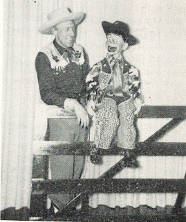

Ancient Ventriloquism
3/4/2012
 |
| "Chuck" Kern and "Pardner" |
{kind=link}
"Home at last. A missionary approaches...he wanted to know where to get material to use with his figure in the pulpit. In a deep throated chorus we yell, 'the Bible is full of it.' If given proper attention real productions can be gleaned from the scriptures. And by dressing in different wardrobes your figure can move to any country of history to meander around in the past. This could be most appealing to children. Yes, the grownup too will stay awake until the sermon is over, have no fear of that.
"Along Biblical lines we venture a word of caution: Stay away from serious scripts. Keep the figure human. After all, the Bible was written about the lives of down-to-earth human beings; sinful ones at that. So in this setting don't make a reverend out of the figure. Keep him a clown on jester in the king's court. The children will love him for what he is and it is surprising the amount of Bibleology retained in their minds because of this."